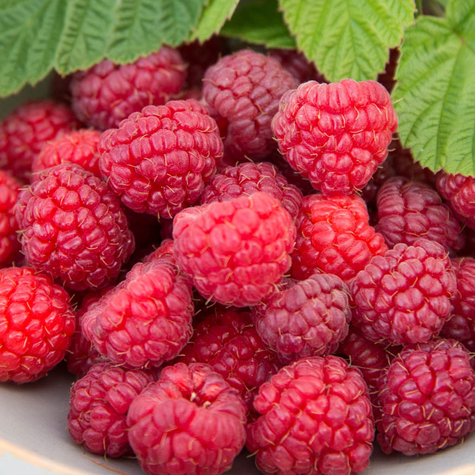
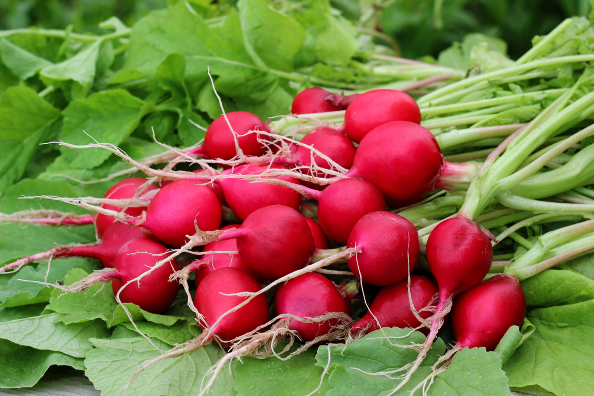
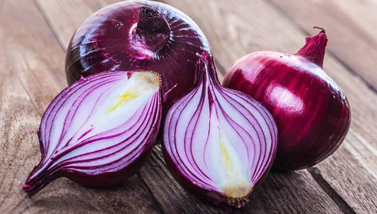
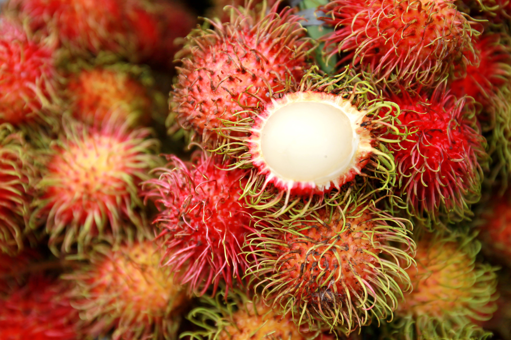
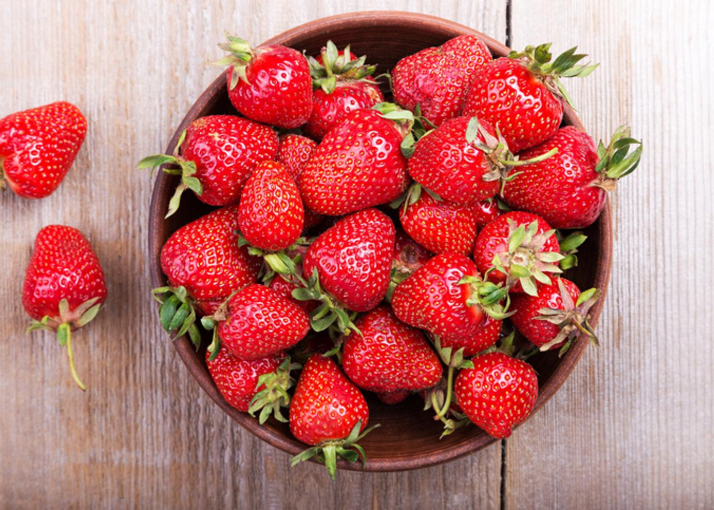
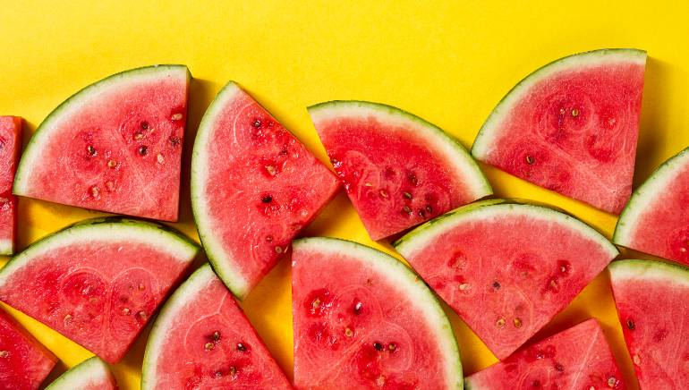

You may ask, "Why should we rank the red foods? Why rank foods at all?" Well let me tell you why.
- Red is a really cool color.
- Red is the color of passion and we are passionate about food here.
- You know what else is cool and red? The Red Power Ranger and he was the leader.
Number 10: Raspberries

The worst of the red fruits in my opinion. They're the lazy, squishy cousin to the blackberry. They just straight up mush when you try and grab one. The raspberry does go well with cakes and desserts so you have to give
it that.
Number 9: Tomatoes

Why rank tomatoes so low you say? They are used in basically every sauce, condiment, italian dish, and salad. So why are they number 9? Because these red and round disasters do not know if they want to be a fruit or a
vegetable. They're living the highlife on both sides with none of the consiquences. Also they are gross just by themselves.
Number 8: Radishes

I actually really do like radishes and think they are a fantastic vegetable. You can roast them, mandoline them for thinly sliced toppings for taco night, or chop them up for a salad. They get a lower ranking as they are
truly red and they are just too small to make it worth your while at times.
Number 7: Red Chili Peppers
The only fruit or veg up here that a world class band is named after. "Hey", chili peppers 'spice' up any boring dish and add that kick that "Can't Stop" you from just wanting to "Dance, Dance, Dance". Also spicy food is
best food.
Number 6: Red Onions

Who doesn't love a good onion? As a staple of the holy duo of base ingredients, (the other being garlic), the onion is a cannot live with out food substance. There are an infinite number of possibilites with an onion and
best of all you can eat them raw. They are also like ogres.
Number 5: Red Apples

I mean it is just a regular old fruit that everyone has around their kitchen. The apple is the pillar of the pie, the king of caramel, the sultan of salads, the top talent of turnovers, the secretary of sauce, and the
list goes on and on. Basically, you can use apples as a base for most everything you make in the kitchen.
Number 4: Rambutan

Hailing from Vietnam, this spikey fruit delivers a delicious pear-like texture and taste that makes it worth the effort in securing this East Asian fruit.
Number 3: Red Cherries

Coming up third on our list, the red cherry, sometimes mistaken as a maraschino cherry, is perfect for that cocktail at home, with no one around since we are stuck inside during this pandemic but hey, home drinking is the
night on the town. Or at least that is what I tell myself.
Number 2: Strawberries

Almost making it to the top of the list are the seeded berries themselves, strawberries. These are amazing to have in a smoothie, with chocolate, honey, whipped cream, cake, more cake, possibly ANOTHER cake. Either way
You cannot go wrong with some strawberries in your life.
Number 1: Watermelon

What is more summer, more quintessentially childhood around the pool and around the family than watermelon. This perfect fruit is fantastic on its own or in salads, grilled, roasted, and toasted. But really we all know
you are going to eat it with a big grin on your face as you dive into that watermelon wedge.